CODING AGENTS AS PIXEL WORLD MODELS
traex/DeepSeek-V4.1-Flash · phygen_142
点击播放 · 原生 RGB 像素
逐轮保存的候选
回放视频、检查图与代码变化。
每份候选均可单独播放。实际图片检查记录在下方工具轨迹中。
候选 01播放与检查图
点击播放 · 原生 RGB 像素

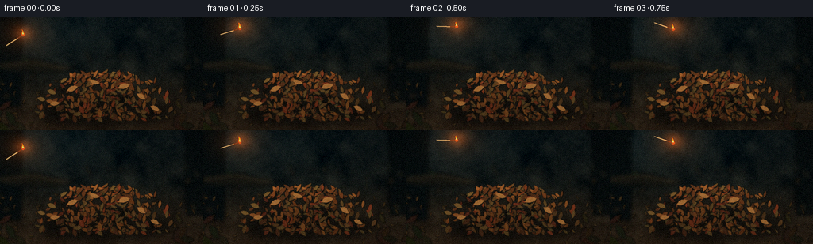
展开代码变化
--- 上一保存版本
+++ 本次保存版本
@@ -0,0 +1,680 @@
+from __future__ import annotations
+
+import math
+from pathlib import Path
+
+import numpy as np
+from PIL import Image, ImageDraw, ImageFilter
+
+import artifact_io
+
+
+WIDTH = 256
+HEIGHT = 144
+FRAMES = 20
+FPS = 4.0
+SS = 3
+
+W = WIDTH * SS
+H = HEIGHT * SS
+
+
+def s(value: float) -> int:
+ return int(round(value * SS))
+
+
+def rgba(color: tuple[int, int, int], alpha: int = 255) -> tuple[int, int, int, int]:
+ return color[0], color[1], color[2], alpha
+
+
+def resize_noise(rng: np.random.Generator, shape: tuple[int, int], cells: tuple[int, int]) -> np.ndarray:
+ small = rng.normal(0.0, 1.0, (cells[1], cells[0])).astype(np.float32)
+ image = Image.fromarray(small).resize(shape, Image.Resampling.BICUBIC)
+ return np.asarray(image, dtype=np.float32)
+
+
+def make_ground() -> Image.Image:
+ rng = np.random.default_rng(142)
+ yy = np.linspace(0.0, 1.0, H, dtype=np.float32)[:, None]
+ horizon = np.array([13.0, 20.0, 21.0], dtype=np.float32)
+ middle = np.array([28.0, 27.0, 21.0], dtype=np.float32)
+ floor = np.array([49.0, 35.0, 22.0], dtype=np.float32)
+ blend = np.clip((yy - 0.08) / 0.72, 0.0, 1.0)
+ lower = np.clip((yy - 0.48) / 0.52, 0.0, 1.0)
+ color = np.broadcast_to(horizon, (H, W, 3)).copy()
+ color = color * (1.0 - blend[..., None]) + middle * blend[..., None]
+ color = color * (1.0 - lower[..., None]) + floor * lower[..., None]
+
+ cloud = resize_noise(rng, (W, H), (18, 10))
+ fine = resize_noise(rng, (W, H), (62, 34))
+ color += cloud[..., None] * np.array([4.0, 3.5, 2.5], dtype=np.float32)
+ color += fine[..., None] * np.array([2.0, 1.6, 1.2], dtype=np.float32)
+
+ xx = np.linspace(0.0, 1.0, W, dtype=np.float32)[None, :]
+ cool_haze = np.exp(-(((xx - 0.12) / 0.48) ** 2 + ((yy - 0.12) / 0.34) ** 2) * 2.2)
+ color += cool_haze[..., None] * np.array([7.0, 12.0, 13.0], dtype=np.float32)
+
+ return Image.fromarray(np.clip(color, 0, 255).astype(np.uint8), "RGB").convert("RGBA")
+
+
+def leaf_polygon(
+ rng: np.random.Generator,
+ cx: float,
+ cy: float,
+ length: float,
+ width: float,
+ angle: float,
+ curl: float = 0.0,
+) -> list[tuple[float, float]]:
+ ux, uy = math.cos(angle), math.sin(angle)
+ vx, vy = -uy, ux
+ profile = [
+ (-0.52, 0.00),
+ (-0.36, 0.26),
+ (-0.12, 0.49),
+ (0.18, 0.46),
+ (0.43, 0.22),
+ (0.52, 0.00),
+ (0.35, -0.24),
+ (0.08, -0.47),
+ (-0.22, -0.43),
+ ]
+ points: list[tuple[float, float]] = []
+ for along, across in profile:
+ jitter = 1.0 + rng.uniform(-0.09, 0.09)
+ bend = curl * (0.55 - (along + 0.52)) * (0.55 - (along + 0.52))
+ px = cx + ux * along * length + vx * (across * width + bend)
+ py = cy + uy * along * length + vy * (across * width + bend)
+ points.append((px * SS, py * SS))
+ # Keep the random draw in the geometry even when the variation is subtle.
+ _ = jitter
+ return points
+
+
+def draw_leaf(
+ draw: ImageDraw.ImageDraw,
+ rng: np.random.Generator,
+ cx: float,
+ cy: float,
+ length: float,
+ width: float,
+ angle: float,
+ color: tuple[int, int, int],
+ alpha: int = 255,
+ vein: bool = True,
+) -> None:
+ shadow_offset = max(0.7, length * 0.055)
+ shadow = [
+ (x + s(shadow_offset), y + s(shadow_offset * 0.8))
+ for x, y in leaf_polygon(rng, cx, cy, length, width, angle, curl=rng.uniform(-2.0, 2.0))
+ ]
+ draw.polygon(shadow, fill=rgba((11, 10, 7), min(145, alpha)))
+ points = leaf_polygon(rng, cx, cy, length, width, angle, curl=rng.uniform(-2.0, 2.0))
+ draw.polygon(points, fill=rgba(color, alpha))
+
+ if vein and length > 4.0:
+ ux, uy = math.cos(angle), math.sin(angle)
+ vx, vy = -uy, ux
+ vein_color = (
+ min(255, int(color[0] * 1.28 + 8)),
+ min(255, int(color[1] * 1.25 + 7)),
+ min(255, int(color[2] * 1.18 + 4)),
+ )
+ draw.line(
+ [
+ (s(cx - ux * length * 0.34), s(cy - uy * length * 0.34)),
+ (s(cx + ux * length * 0.35), s(cy + uy * length * 0.35)),
+ ],
+ fill=rgba(vein_color, min(180, alpha)),
+ width=max(1, s(0.34)),
+ )
+ if length > 8.0:
+ for side in (-1.0, 1.0):
+ draw.line(
+ [
+ (s(cx), s(cy)),
+ (
+ s(cx + ux * length * 0.14 + vx * width * 0.28 * side),
+ s(cy + uy * length * 0.14 + vy * width * 0.28 * side),
+ ),
+ ],
+ fill=rgba(vein_color, min(135, alpha)),
+ width=max(1, s(0.22)),
+ )
+
+
+def add_background_details(base: Image.Image) -> Image.Image:
+ rng = np.random.default_rng(904)
+
+ far = Image.new("RGBA", (W, H), (0, 0, 0, 0))
+ far_draw = ImageDraw.Draw(far, "RGBA")
+
+ # Out-of-focus woodland silhouettes establish depth without competing with the action.
+ far_draw.rectangle((s(-13), s(-10), s(27), s(114)), fill=rgba((8, 13, 13), 235))
+ far_draw.rectangle((s(234), s(-9), s(273), s(108)), fill=rgba((8, 12, 12), 220))
+ far_draw.polygon(
+ [(s(-20), s(61)), (s(43), s(53)), (s(96), s(65)), (s(72), s(72)), (s(15), s(69))],
+ fill=rgba((23, 21, 15), 220),
+ )
+ far_draw.line(
+ [(s(2), s(62)), (s(41), s(57)), (s(89), s(66))],
+ fill=rgba((67, 49, 29), 110),
+ width=s(2.1),
+ )
+ for _ in range(34):
+ x = rng.uniform(0, 256)
+ y = rng.uniform(46, 121)
+ length = rng.uniform(3.0, 11.0)
+ width = length * rng.uniform(0.22, 0.42)
+ color = (
+ int(rng.uniform(38, 72)),
+ int(rng.uniform(35, 59)),
+ int(rng.uniform(20, 33)),
+ )
+ draw_leaf(far_draw, rng, x, y, length, width, rng.uniform(0, math.tau), color, 155, vein=False)
+ far = far.filter(ImageFilter.GaussianBlur(s(2.3)))
+ base = Image.alpha_composite(base, far)
+
+ mid = Image.new("RGBA", (W, H), (0, 0, 0, 0))
+ mid_draw = ImageDraw.Draw(mid, "RGBA")
+ # A few dry grass blades at the back edge of the clearing.
+ for x, top, bend in [(47, 55, -8), (53, 60, 7), (202, 53, 8), (209, 58, -5), (217, 65, 6)]:
+ mid_draw.line(
+ [(s(x), s(113)), (s(x + bend * 0.35), s(top + 17)), (s(x + bend), s(top))],
+ fill=rgba((70, 57, 31), 145),
+ width=max(1, s(0.55)),
+ )
+ for _ in range(125):
+ x = rng.uniform(-5, 261)
+ y = rng.uniform(81, 143)
+ edge = abs(x - 128) / 128
+ length = rng.uniform(2.2, 7.8) * (0.82 + edge * 0.3)
+ width = length * rng.uniform(0.24, 0.44)
+ warm = rng.uniform(0.0, 1.0)
+ color = (
+ int(55 + 36 * warm),
+ int(39 + 24 * warm),
+ int(20 + 10 * warm),
+ )
+ draw_leaf(mid_draw, rng, x, y, length, width, rng.uniform(0, math.tau), color, 205, vein=False)
+
+ # Fine twigs and stems weave through the scattered litter.
+ for _ in range(11):
+ x = rng.uniform(5, 249)
+ y = rng.uniform(92, 137)
+ length = rng.uniform(14, 40)
+ angle = rng.uniform(-0.32, 0.32)
+ x2 = x + math.cos(angle) * length
+ y2 = y + math.sin(angle) * length
+ mid_draw.line(
+ [(s(x), s(y)), (s((x + x2) * 0.5), s((y + y2) * 0.5 + rng.uniform(-2, 2))), (s(x2), s(y2))],
+ fill=rgba((42, 31, 18), 160),
+ width=max(1, s(0.5)),
+ )
+ mid = mid.filter(ImageFilter.GaussianBlur(s(0.55)))
+ return Image.alpha_composite(base, mid)
+
+
+def add_leaf_pile(base: Image.Image) -> Image.Image:
+ rng = np.random.default_rng(7142)
+ layer = Image.new("RGBA", (W, H), (0, 0, 0, 0))
+ draw = ImageDraw.Draw(layer, "RGBA")
+
+ shadow = Image.new("RGBA", (W, H), (0, 0, 0, 0))
+ shadow_draw = ImageDraw.Draw(shadow, "RGBA")
+ shadow_draw.ellipse(
+ (s(45), s(101), s(216), s(141)),
+ fill=rgba((5, 5, 4), 150),
+ )
+ shadow = shadow.filter(ImageFilter.GaussianBlur(s(5.0)))
+ layer = Image.alpha_composite(layer, shadow)
+ draw = ImageDraw.Draw(layer, "RGBA")
+
+ # Back leaves give the mound a broken, organic silhouette.
+ back_colors = [
+ (64, 38, 20),
+ (75, 45, 23),
+ (83, 54, 27),
+ (68, 54, 27),
+ (76, 34, 20),
+ ]
+ for _ in range(95):
+ x = float(np.clip(rng.normal(131, 41), 47, 215))
+ u = (x - 131.0) / 82.0
+ top = 101.0 - 32.0 * math.sqrt(max(0.0, 1.0 - u * u))
+ y = rng.uniform(top + 2.0, 130.0)
+ length = rng.uniform(5.5, 11.5)
+ color = back_colors[int(rng.integers(0, len(back_colors)))]
+ draw_leaf(draw, rng, x, y, length, length * rng.uniform(0.38, 0.58), rng.uniform(0, math.tau), color, 245)
+
+ # Main pile: denser and warmer, with stronger highlights toward the upper left.
+ main_colors = [
+ (91, 49, 24),
+ (111, 58, 26),
+ (126, 70, 31),
+ (143, 82, 36),
+ (108, 78, 38),
+ (83, 47, 25),
+ (128, 55, 29),
+ (96, 65, 32),
+ ]
+ for _ in range(235):
+ x = float(np.clip(rng.normal(131, 37), 52, 210))
+ u = (x - 131.0) / 82.0
+ top = 100.0 - 31.0 * math.sqrt(max(0.0, 1.0 - u * u))
+ y = rng.uniform(top, 130.0)
+ length = rng.uniform(4.4, 12.0)
+ width = length * rng.uniform(0.34, 0.56)
+ color = main_colors[int(rng.integers(0, len(main_colors)))]
+ light = np.clip(1.12 - (y - top) / 88.0 + (110.0 - x) / 800.0, 0.72, 1.12)
+ color = tuple(int(np.clip(channel * light, 0, 255)) for channel in color)
+ draw_leaf(draw, rng, x, y, length, width, rng.uniform(0, math.tau), color, 255)
+
+ # A few prominent curled leaves catch the cool skylight.
+ for x, y, length, angle in [
+ (91, 91, 14.0, -0.4),
+ (119, 83, 12.5, 0.3),
+ (156, 88, 15.0, -0.25),
+ (178, 101, 13.0, 0.6),
+ (69, 110, 12.0, -0.15),
+ (195, 116, 12.0, 0.45),
+ ]:
+ draw_leaf(draw, rng, x, y, length, length * 0.48, angle, (160, 103, 50), 255)
+ ux, uy = math.cos(angle), math.sin(angle)
+ draw.line(
+ [(s(x - ux * length * 0.32), s(y - uy * length * 0.32)), (s(x + ux * length * 0.33), s(y + uy * length * 0.33))],
+ fill=rgba((203, 147, 76), 145),
+ width=max(1, s(0.45)),
+ )
+
+ layer = layer.filter(ImageFilter.GaussianBlur(s(0.18)))
+ return Image.alpha_composite(base, layer)
+
+
+def add_foreground(base: Image.Image) -> Image.Image:
+ rng = np.random.default_rng(2201)
+ fg = Image.new("RGBA", (W, H), (0, 0, 0, 0))
+ draw = ImageDraw.Draw(fg, "RGBA")
+
+ # Dark, close leaves frame the lower corners.
+ for _ in range(18):
+ left = rng.uniform(0, 1) < 0.5
+ x = rng.uniform(-8, 38) if left else rng.uniform(220, 265)
+ y = rng.uniform(111, 148)
+ length = rng.uniform(12, 23)
+ color = (
+ int(rng.uniform(27, 48)),
+ int(rng.uniform(24, 38)),
+ int(rng.uniform(14, 24)),
+ )
+ draw_leaf(draw, rng, x, y, length, length * 0.45, rng.uniform(0, math.tau), color, 245, vein=False)
+ fg = fg.filter(ImageFilter.GaussianBlur(s(1.0)))
+ return Image.alpha_composite(base, fg)
+
+
+def build_static_scene() -> Image.Image:
+ base = make_ground()
+ base = add_background_details(base)
+ base = add_leaf_pile(base)
+ base = add_foreground(base)
+ return base
+
+
+def path_position(t: float) -> tuple[float, float]:
+ x = 29.0 + 119.0 * t
+ y = 23.0 + 61.0 * t - 34.0 * 4.0 * t * (1.0 - t)
+ return x, y
+
+
+def path_angle(t: float) -> float:
+ dx = 119.0
+ dy = 61.0 - 136.0 + 272.0 * t
+ return math.atan2(dy, dx)
+
+
+def flame_shape(
+ rng: np.random.Generator,
+ cx: float,
+ base_y: float,
+ height: float,
+ width: float,
+ phase: float,
+ lean: float,
+) -> list[tuple[float, float]]:
+ left: list[tuple[float, float]] = []
+ right: list[tuple[float, float]] = []
+ steps = 8
+ for k in range(steps + 1):
+ q = k / steps
+ sway = math.sin(phase + q * 4.2) * width * 0.12 * q
+ center = cx + lean * height * q + sway
+ taper = max(0.0, 1.0 - q) ** 0.72
+ wobble = 0.86 + 0.14 * math.sin(phase * 1.7 + q * 7.0)
+ half = width * 0.5 * taper * wobble
+ left.append((center - half, base_y - height * q))
+ right.append((center + half, base_y - height * q))
+ return [(x * SS, y * SS) for x, y in left + list(reversed(right))]
+
+
+def draw_flame(
+ image: Image.Image,
+ rng: np.random.Generator,
+ cx: float,
+ base_y: float,
+ height: float,
+ width: float,
+ phase: float,
+ lean: float,
+ strength: float,
+) -> None:
+ if height < 1.0:
+ return
+ outer = flame_shape(rng, cx, base_y, height, width, phase, lean)
+ inner = flame_shape(rng, cx, base_y, height * 0.70, width * 0.58, phase + 0.8, lean * 0.85)
+ core = flame_shape(rng, cx, base_y, height * 0.37, width * 0.30, phase + 1.6, lean * 0.65)
+ ImageDraw.Draw(image, "RGBA").polygon(outer, fill=rgba((255, 88, 9), int(145 + 50 * strength)))
+ ImageDraw.Draw(image, "RGBA").polygon(inner, fill=rgba((255, 157, 26), int(185 + 45 * strength)))
+ ImageDraw.Draw(image, "RGBA").polygon(core, fill=rgba((255, 242, 171), int(210 + 35 * strength)))
+
+
+def add_gaussian(heat: np.ndarray, cx: float, cy: float, sx: float, sy: float, amount: float) -> None:
+ yy, xx = np.mgrid[0:HEIGHT, 0:WIDTH]
+ heat += amount * np.exp(-(((xx - cx) / sx) ** 2 + ((yy - cy) / sy) ** 2) * 0.5)
+
+
+def draw_match(
+ image: Image.Image,
+ head_x: float,
+ head_y: float,
+ angle: float,
+ flame_height: float,
+ phase: float,
+ in_air: bool,
+) -> None:
+ draw = ImageDraw.Draw(image, "RGBA")
+ ux, uy = math.cos(angle), math.sin(angle)
+ tail_x = head_x - ux * 25.0
+ tail_y = head_y - uy * 25.0
+
+ # Soft shadow against the leaves.
+ if not in_air:
+ draw.line(
+ [(s(tail_x + 1.3), s(tail_y + 2.2)), (s(head_x + 1.3), s(head_y + 2.2))],
+ fill=rgba((8, 6, 4), 155),
+ width=s(2.4),
+ )
+
+ draw.line(
+ [(s(tail_x), s(tail_y)), (s(head_x), s(head_y))],
+ fill=rgba((201, 163, 100), 255),
+ width=max(2, s(1.35)),
+ )
+ draw.line(
+ [(s(tail_x - ux * 0.8), s(tail_y - uy * 0.8)), (s(head_x - ux * 7.0), s(head_y - uy * 7.0))],
+ fill=rgba((228, 195, 135), 215),
+ width=max(1, s(0.45)),
+ )
+ # Charred neck and red match head.
+ draw.line(
+ [(s(head_x - ux * 8.0), s(head_y - uy * 8.0)), (s(head_x), s(head_y))],
+ fill=rgba((58, 31, 20), 255),
+ width=max(2, s(1.55)),
+ )
+ draw.ellipse(
+ (s(head_x - 2.1), s(head_y - 2.1), s(head_x + 2.1), s(head_y + 2.1)),
+ fill=rgba((91, 34, 22), 255),
+ )
+ draw.ellipse(
+ (s(head_x - 1.25), s(head_y - 1.25), s(head_x + 1.25), s(head_y + 1.25)),
+ fill=rgba((181, 60, 24), 255),
+ )
+ draw_flame(
+ image,
+ np.random.default_rng(800 + int(phase * 20)),
+ head_x + (0.6 if not in_air else 0.0),
+ head_y - 0.8,
+ flame_height,
+ max(2.5, flame_height * 0.56),
+ phase,
+ -0.12 if in_air else -0.04,
+ 0.5,
+ )
+
+
+def draw_smoke(
+ image: Image.Image,
+ puffs: list[tuple[float, float, float, int]],
+ blur: float,
+) -> None:
+ layer = Image.new("RGBA", (W, H), (0, 0, 0, 0))
+ draw = ImageDraw.Draw(layer, "RGBA")
+ for cx, cy, radius, alpha in puffs:
+ color = (70, 76, 74, alpha)
+ draw.ellipse(
+ (s(cx - radius), s(cy - radius * 0.72), s(cx + radius), s(cy + radius * 0.72)),
+ fill=color,
+ )
+ layer = layer.filter(ImageFilter.GaussianBlur(s(blur)))
+ image.alpha_composite(layer)
+
+
+def draw_char(image: Image.Image, after: float) -> None:
+ if after <= 0.0:
+ return
+ rng = np.random.default_rng(606)
+ layer = Image.new("RGBA", (W, H), (0, 0, 0, 0))
+ draw = ImageDraw.Draw(layer, "RGBA")
+ sites = [
+ (149.0, 89.0, 5.8, 0.00),
+ (138.5, 96.0, 5.0, 0.13),
+ (161.5, 97.0, 5.5, 0.26),
+ (171.0, 91.0, 4.2, 0.44),
+ (127.0, 101.0, 4.0, 0.61),
+ ]
+ for cx, cy, size, delay in sites:
+ growth = np.clip((after - delay) / 0.32, 0.0, 1.0)
+ if growth <= 0:
+ continue
+ radius = size * (0.35 + 0.65 * growth)
+ points: list[tuple[float, float]] = []
+ count = 11
+ for k in range(count):
+ a = math.tau * k / count
+ r = radius * rng.uniform(0.60, 1.10)
+ points.append((s(cx + math.cos(a) * r * 1.35), s(cy + math.sin(a) * r * 0.62)))
+ draw.polygon(points, fill=rgba((20, 16, 12), int(90 + 95 * growth)))
+ for _ in range(5):
+ a = rng.uniform(0, math.tau)
+ r = rng.uniform(0.0, radius)
+ ex = cx + math.cos(a) * r * 1.1
+ ey = cy + math.sin(a) * r * 0.5
+ draw.ellipse((s(ex - 0.35), s(ey - 0.25), s(ex + 0.35), s(ey + 0.25)), fill=rgba((239, 83, 18), 190))
+ layer = layer.filter(ImageFilter.GaussianBlur(s(0.45)))
+ image.alpha_composite(layer)
+
+
+def render_dynamic(static: Image.Image, frame_index: int) -> tuple[Image.Image, np.ndarray]:
+ image = static.copy()
+ glow = np.zeros((HEIGHT, WIDTH), dtype=np.float32)
+ heat = np.zeros((HEIGHT, WIDTH), dtype=np.float32)
+
+ impact_frame = 7.0
+ if frame_index <= impact_frame:
+ t = frame_index / impact_frame
+ hx, hy = path_position(t)
+ angle = path_angle(t)
+ in_air = True
+ after = 0.0
+ flight_t = t
+ else:
+ hx, hy = 149.2, 88.8
+ angle = 2.53
+ in_air = False
+ after = (frame_index - impact_frame) / (FRAMES - 1.0 - impact_frame)
+ flight_t = 1.0
+
+ # Trail smoke is behind the moving match.
+ puffs: list[tuple[float, float, float, int]] = []
+ if in_air:
+ for k in range(13):
+ u = max(0.0, flight_t - k * 0.055)
+ px, py = path_position(u)
+ age = flight_t - u
+ puffs.append(
+ (
+ px - 3.0 - age * 8.0,
+ py - 2.0 - age * 20.0,
+ 1.5 + age * 5.2,
+ int(np.clip(46 - k * 2.2, 8, 46)),
+ )
+ )
+ else:
+ # A thin plume begins at contact and broadens as the fire catches.
+ for k in range(16):
+ q = (k / 15.0 + after * 0.55) % 1.0
+ px = 149.0 + q * 23.0 + math.sin(k * 1.7 + frame_index * 0.45) * (1.0 + q * 3.5)
+ py = 86.0 - q * (27.0 + 39.0 * after)
+ radius = 2.0 + q * (5.0 + 5.0 * after)
+ alpha = int((30 + 48 * after) * (1.0 - q * 0.58))
+ puffs.append((px, py, radius, alpha))
+ draw_smoke(image, puffs, 1.5 if in_air else 2.0)
+
+ draw_char(image, after)
+
+ # A small flare at first contact.
+ if 0.0 < after < 0.20:
+ burst = 1.0 - after / 0.20
+ flash = Image.new("RGBA", (W, H), (0, 0, 0, 0))
+ flash_draw = ImageDraw.Draw(flash, "RGBA")
+ flash_draw.ellipse(
+ (s(145), s(82), s(156), s(93)),
+ fill=rgba((255, 214, 104), int(160 * burst)),
+ )
+ flash = flash.filter(ImageFilter.GaussianBlur(s(1.2)))
+ image.alpha_composite(flash)
+
+ # Flames and their light sources.
+ sources: list[tuple[float, float, float, float]] = []
+ if in_air:
+ flicker = 0.9 + 0.18 * math.sin(frame_index * 1.9)
+ draw_match(image, hx, hy, angle, 6.4 * flicker, frame_index * 0.73, True)
+ sources.append((hx, hy - 2.5, 7.8, 1.0))
+ else:
+ match_flicker = 0.9 + 0.2 * math.sin(frame_index * 2.1)
+ draw_match(image, hx, hy, angle, (7.0 + 2.0 * after) * match_flicker, frame_index * 0.71, False)
+ sources.append((hx, hy - 5.0, 9.0, 1.0))
+
+ fire_sites = [
+ (139.0, 95.5, 0.72, 0.02),
+ (160.5, 97.0, 0.90, 0.10),
+ (171.5, 91.5, 0.70, 0.24),
+ (127.5, 101.0, 0.58, 0.37),
+ (151.5, 87.0, 0.92, 0.00),
+ ]
+ for idx, (cx, cy, scale, delay) in enumerate(fire_sites):
+ growth = float(np.clip((after - delay) / 0.22, 0.0, 1.0))
+ if growth <= 0.0:
+ continue
+ pulse = 0.88 + 0.17 * math.sin(frame_index * (1.4 + idx * 0.11) + idx * 1.3)
+ height = (6.0 + 14.0 * growth) * scale * pulse
+ width = (3.8 + 6.8 * growth) * scale
+ draw_flame(
+ image,
+ np.random.default_rng(1000 + frame_index * 13 + idx),
+ cx,
+ cy,
+ height,
+ width,
+ frame_index * 0.82 + idx * 1.17,
+ 0.08 * math.sin(frame_index + idx),
+ growth,
+ )
+ sources.append((cx, cy - height * 0.25, 8.0 + 13.0 * growth * scale, 0.55 + 0.55 * growth))
+
+ # Embers: deterministic ballistic streaks.
+ spark_layer = Image.new("RGBA", (W, H), (0, 0, 0, 0))
+ spark_draw = ImageDraw.Draw(spark_layer, "RGBA")
+ spark_rng = np.random.default_rng(5500)
+ sparks = []
+ for _ in range(42):
+ source_idx = int(spark_rng.integers(0, 5))
+ t0 = float(spark_rng.uniform(0.0, 0.80))
+ life = float(spark_rng.uniform(0.22, 0.62))
+ vx = float(spark_rng.uniform(-16.0, 18.0))
+ vy = float(spark_rng.uniform(-30.0, -11.0))
+ sparks.append((source_idx, t0, life, vx, vy, spark_rng.uniform(0.55, 1.25)))
+ source_points = [(149.0, 87.0), (139.0, 95.0), (160.0, 97.0), (171.0, 91.0), (127.0, 101.0)]
+ for source_idx, t0, life, vx, vy, size in sparks:
+ age = (after - t0) / life
+ if age <= 0.0 or age >= 1.0:
+ continue
+ sx, sy = source_points[source_idx]
+ x = sx + vx * age * 0.65 + math.sin(age * 6.0 + source_idx) * 1.2
+ y = sy + vy * age + 24.0 * age * age
+ px = x - vx * 0.014
+ py = y - vy * 0.014 + 1.0
+ fade = math.sin(math.pi * age)
+ color = (255, int(145 + 80 * (1.0 - age)), 50, int(120 + 120 * fade))
+ spark_draw.line(
+ [(s(px), s(py)), (s(x), s(y))],
+ fill=color,
+ width=max(1, s(0.42 * size)),
+ )
+ spark_draw.ellipse(
+ (s(x - 0.45 * size), s(y - 0.45 * size), s(x + 0.45 * size), s(y + 0.45 * size)),
+ fill=rgba((255, 213, 107), int(155 + 80 * fade)),
+ )
+ spark_layer = spark_layer.filter(ImageFilter.GaussianBlur(s(0.22)))
+ image.alpha_composite(spark_layer)
+
+ # Build light masks at output resolution.
+ for cx, cy, radius, strength in sources:
+ add_gaussian(glow, cx, cy, radius * 1.25, radius * 1.05, strength)
+ add_gaussian(heat, cx, cy, radius * 2.9, radius * 2.1, strength * 0.64)
+ glow = np.clip(glow, 0.0, 2.0)
+ heat = np.clip(heat, 0.0, 1.25)
+ return image, np.stack([glow, heat], axis=-1)
+
+
+def apply_grade(image: Image.Image, light_masks: np.ndarray, frame_index: int) -> np.ndarray:
+ rgb = np.asarray(image.convert("RGB").resize((WIDTH, HEIGHT), Image.Resampling.LANCZOS), dtype=np.float32)
+ glow = light_masks[..., 0]
+ heat = light_masks[..., 1]
+
+ # Warm illumination affects the leaves beneath the flames.
+ rgb += heat[..., None] * np.array([63.0, 25.0, 3.0], dtype=np.float32)
+ rgb += (glow ** 1.55)[..., None] * np.array([83.0, 32.0, 7.0], dtype=np.float32)
+
+ # Gentle cinematic grade: cool lifted shadows, restrained highlights.
+ rgb = np.clip(rgb / 255.0, 0.0, 1.0)
+ rgb = rgb * 0.96 + np.array([0.010, 0.016, 0.019], dtype=np.float32)
+ rgb = (rgb - 0.43) * 1.055 + 0.43
+ rgb = np.clip(rgb, 0.0, 1.0)
+
+ yy, xx = np.mgrid[0:HEIGHT, 0:WIDTH].astype(np.float32)
+ nx = (xx - WIDTH * 0.5) / (WIDTH * 0.56)
+ ny = (yy - HEIGHT * 0.48) / (HEIGHT * 0.64)
+ vignette = np.clip(1.0 - 0.20 * (nx * nx + ny * ny), 0.72, 1.0)
+ rgb *= vignette[..., None]
+
+ # Fine grain keeps the low-resolution image from looking like flat vector art.
+ grain_rng = np.random.default_rng(9100 + frame_index)
+ grain = grain_rng.normal(0.0, 1.0, (HEIGHT, WIDTH, 1)).astype(np.float32)
+ grain_fine = grain_rng.normal(0.0, 1.0, (HEIGHT, WIDTH, 3)).astype(np.float32)
+ rgb += grain * 0.012 + grain_fine * 0.0045
+ return np.clip(rgb * 255.0 + 0.5, 0, 255).astype(np.uint8)
+
+
+def main() -> None:
+ static = build_static_scene()
+ frames = []
+ for frame_index in range(FRAMES):
+ dynamic, light_masks = render_dynamic(static, frame_index)
+ frames.append(apply_grade(dynamic, light_masks, frame_index))
+
+ output_dir = Path(__file__).resolve().parent
+ artifact_io.save(np.asarray(frames, dtype=np.uint8), output_dir)
+
+
+if __name__ == "__main__":
+ main()
候选 02播放与检查图
点击播放 · 原生 RGB 像素

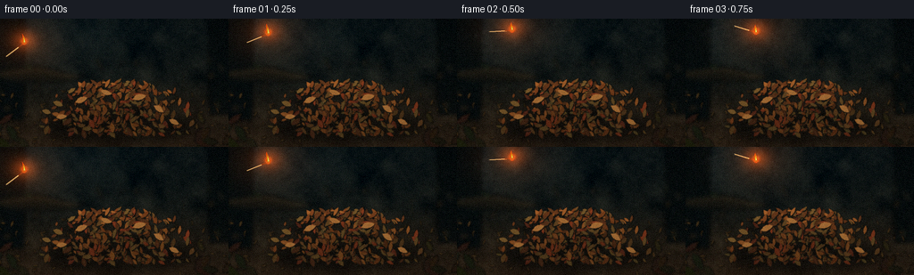
展开代码变化
--- 上一保存版本
+++ 本次保存版本
@@ -321,14 +321,14 @@
def path_position(t: float) -> tuple[float, float]:
- x = 29.0 + 119.0 * t
- y = 23.0 + 61.0 * t - 34.0 * 4.0 * t * (1.0 - t)
+ x = 27.0 + 121.0 * t
+ y = 27.0 + 60.0 * t - 38.0 * 4.0 * t * (1.0 - t)
return x, y
def path_angle(t: float) -> float:
- dx = 119.0
- dy = 61.0 - 136.0 + 272.0 * t
+ dx = 121.0
+ dy = 60.0 - 152.0 + 304.0 * t
return math.atan2(dy, dx)
@@ -343,13 +343,15 @@
) -> list[tuple[float, float]]:
left: list[tuple[float, float]] = []
right: list[tuple[float, float]] = []
- steps = 8
+ steps = 12
for k in range(steps + 1):
q = k / steps
- sway = math.sin(phase + q * 4.2) * width * 0.12 * q
+ sway = math.sin(phase + q * 5.1) * width * 0.15 * q
center = cx + lean * height * q + sway
- taper = max(0.0, 1.0 - q) ** 0.72
- wobble = 0.86 + 0.14 * math.sin(phase * 1.7 + q * 7.0)
+ taper = max(0.0, 1.0 - q) ** 0.94
+ wobble = 0.83 + 0.17 * math.sin(phase * 1.7 + q * 9.0)
+ if q > 0.72:
+ taper *= max(0.22, 1.0 - (q - 0.72) * 2.6)
half = width * 0.5 * taper * wobble
left.append((center - half, base_y - height * q))
right.append((center + half, base_y - height * q))
@@ -370,11 +372,13 @@
if height < 1.0:
return
outer = flame_shape(rng, cx, base_y, height, width, phase, lean)
- inner = flame_shape(rng, cx, base_y, height * 0.70, width * 0.58, phase + 0.8, lean * 0.85)
- core = flame_shape(rng, cx, base_y, height * 0.37, width * 0.30, phase + 1.6, lean * 0.65)
- ImageDraw.Draw(image, "RGBA").polygon(outer, fill=rgba((255, 88, 9), int(145 + 50 * strength)))
- ImageDraw.Draw(image, "RGBA").polygon(inner, fill=rgba((255, 157, 26), int(185 + 45 * strength)))
- ImageDraw.Draw(image, "RGBA").polygon(core, fill=rgba((255, 242, 171), int(210 + 35 * strength)))
+ middle = flame_shape(rng, cx + width * 0.04, base_y, height * 0.80, width * 0.56, phase + 0.55, lean * 0.92)
+ inner = flame_shape(rng, cx + width * 0.09, base_y, height * 0.58, width * 0.35, phase + 0.8, lean * 0.85)
+ core = flame_shape(rng, cx + width * 0.11, base_y, height * 0.31, width * 0.18, phase + 1.6, lean * 0.65)
+ ImageDraw.Draw(image, "RGBA").polygon(outer, fill=rgba((218, 48, 5), int(160 + 45 * strength)))
+ ImageDraw.Draw(image, "RGBA").polygon(middle, fill=rgba((255, 92, 7), int(175 + 50 * strength)))
+ ImageDraw.Draw(image, "RGBA").polygon(inner, fill=rgba((255, 171, 24), int(190 + 45 * strength)))
+ ImageDraw.Draw(image, "RGBA").polygon(core, fill=rgba((255, 241, 147), int(205 + 35 * strength)))
def add_gaussian(heat: np.ndarray, cx: float, cy: float, sx: float, sy: float, amount: float) -> None:
@@ -421,20 +425,29 @@
width=max(2, s(1.55)),
)
draw.ellipse(
- (s(head_x - 2.1), s(head_y - 2.1), s(head_x + 2.1), s(head_y + 2.1)),
+ (s(head_x - 2.45), s(head_y - 2.45), s(head_x + 2.45), s(head_y + 2.45)),
fill=rgba((91, 34, 22), 255),
)
draw.ellipse(
- (s(head_x - 1.25), s(head_y - 1.25), s(head_x + 1.25), s(head_y + 1.25)),
+ (s(head_x - 1.55), s(head_y - 1.55), s(head_x + 1.55), s(head_y + 1.55)),
fill=rgba((181, 60, 24), 255),
)
+ # A compact hot halo makes the burning tip legible against the dim forest.
+ halo = Image.new("RGBA", (W, H), (0, 0, 0, 0))
+ halo_draw = ImageDraw.Draw(halo, "RGBA")
+ halo_draw.ellipse(
+ (s(head_x - 5.0), s(head_y - 6.5), s(head_x + 5.0), s(head_y + 2.5)),
+ fill=rgba((255, 89, 12), 95),
+ )
+ halo = halo.filter(ImageFilter.GaussianBlur(s(1.5)))
+ image.alpha_composite(halo)
draw_flame(
image,
np.random.default_rng(800 + int(phase * 20)),
head_x + (0.6 if not in_air else 0.0),
head_y - 0.8,
- flame_height,
- max(2.5, flame_height * 0.56),
+ flame_height * (1.30 if in_air else 1.0),
+ max(2.7, flame_height * (0.63 if in_air else 0.56)),
phase,
-0.12 if in_air else -0.04,
0.5,
@@ -524,8 +537,8 @@
(
px - 3.0 - age * 8.0,
py - 2.0 - age * 20.0,
- 1.5 + age * 5.2,
- int(np.clip(46 - k * 2.2, 8, 46)),
+ 1.7 + age * 5.8,
+ int(np.clip(53 - k * 2.1, 9, 53)),
)
)
else:
@@ -556,13 +569,13 @@
# Flames and their light sources.
sources: list[tuple[float, float, float, float]] = []
if in_air:
- flicker = 0.9 + 0.18 * math.sin(frame_index * 1.9)
- draw_match(image, hx, hy, angle, 6.4 * flicker, frame_index * 0.73, True)
- sources.append((hx, hy - 2.5, 7.8, 1.0))
+ flicker = 0.92 + 0.16 * math.sin(frame_index * 1.9)
+ draw_match(image, hx, hy, angle, 7.5 * flicker, frame_index * 0.73, True)
+ sources.append((hx, hy - 3.0, 10.0, 1.35))
else:
match_flicker = 0.9 + 0.2 * math.sin(frame_index * 2.1)
draw_match(image, hx, hy, angle, (7.0 + 2.0 * after) * match_flicker, frame_index * 0.71, False)
- sources.append((hx, hy - 5.0, 9.0, 1.0))
+ sources.append((hx, hy - 5.0, 8.5, 0.82))
fire_sites = [
(139.0, 95.5, 0.72, 0.02),
@@ -576,8 +589,8 @@
if growth <= 0.0:
continue
pulse = 0.88 + 0.17 * math.sin(frame_index * (1.4 + idx * 0.11) + idx * 1.3)
- height = (6.0 + 14.0 * growth) * scale * pulse
- width = (3.8 + 6.8 * growth) * scale
+ height = (5.5 + 15.5 * growth) * scale * pulse
+ width = (3.3 + 5.1 * growth) * scale
draw_flame(
image,
np.random.default_rng(1000 + frame_index * 13 + idx),
@@ -589,7 +602,7 @@
0.08 * math.sin(frame_index + idx),
growth,
)
- sources.append((cx, cy - height * 0.25, 8.0 + 13.0 * growth * scale, 0.55 + 0.55 * growth))
+ sources.append((cx, cy - height * 0.22, 7.0 + 10.5 * growth * scale, 0.36 + 0.37 * growth))
# Embers: deterministic ballistic streaks.
spark_layer = Image.new("RGBA", (W, H), (0, 0, 0, 0))
@@ -642,8 +655,8 @@
heat = light_masks[..., 1]
# Warm illumination affects the leaves beneath the flames.
- rgb += heat[..., None] * np.array([63.0, 25.0, 3.0], dtype=np.float32)
- rgb += (glow ** 1.55)[..., None] * np.array([83.0, 32.0, 7.0], dtype=np.float32)
+ rgb += heat[..., None] * np.array([48.0, 17.0, 2.0], dtype=np.float32)
+ rgb += (glow ** 1.80)[..., None] * np.array([65.0, 22.0, 4.0], dtype=np.float32)
# Gentle cinematic grade: cool lifted shadows, restrained highlights.
rgb = np.clip(rgb / 255.0, 0.0, 1.0)
候选 03播放与检查图
点击播放 · 原生 RGB 像素
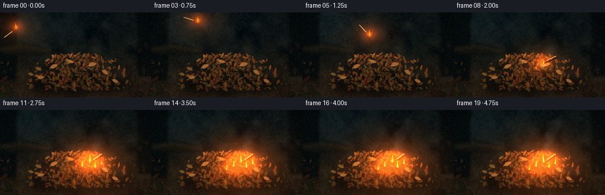
展开代码变化
--- 上一保存版本
+++ 本次保存版本
@@ -519,9 +519,14 @@
in_air = True
after = 0.0
flight_t = t
+ bounce = 0.0
else:
- hx, hy = 149.2, 88.8
- angle = 2.53
+ # Contact occurs between frames; the match rebounds once and settles.
+ bounce_phase = float(np.clip((frame_index - impact_frame) / 2.4, 0.0, 1.0))
+ bounce = 5.5 * math.sin(math.pi * bounce_phase) * (1.0 - 0.55 * bounce_phase)
+ hx = 149.2 + 2.1 * bounce_phase
+ hy = 88.8 - bounce
+ angle = 2.53 + 0.18 * math.sin(math.pi * bounce_phase)
in_air = False
after = (frame_index - impact_frame) / (FRAMES - 1.0 - impact_frame)
flight_t = 1.0
@@ -574,7 +579,15 @@
sources.append((hx, hy - 3.0, 10.0, 1.35))
else:
match_flicker = 0.9 + 0.2 * math.sin(frame_index * 2.1)
- draw_match(image, hx, hy, angle, (7.0 + 2.0 * after) * match_flicker, frame_index * 0.71, False)
+ draw_match(
+ image,
+ hx,
+ hy,
+ angle,
+ (7.0 + 2.0 * after + bounce * 0.35) * match_flicker,
+ frame_index * 0.71,
+ False,
+ )
sources.append((hx, hy - 5.0, 8.5, 0.82))
fire_sites = [
可观测工具轨迹
实际执行的命令与返回图片。
命令 1exit 0
/bin/bash -c "pwd && rg --files -g 'prompt.txt' -g 'GENERATION_RULES.md' -g 'task_spec.json' -g '"'!node_modules'"' -g '"'!venv'"'"
命令 2exit 0
/bin/bash -c "find . -maxdepth 2 -type f -printf '%p\\n' | sort | sed -n '1,200p'"
命令 3exit 1
/bin/bash -c 'command -v ffmpeg; command -v python3; command -v blender; command -v convert; command -v magick; command -v node; command -v chromium; command -v google-chrome'
命令 4exit 0
/bin/bash -c 'cat prompt.txt'
命令 5exit 0
/bin/bash -c 'cat GENERATION_RULES.md'
命令 6exit 0
/bin/bash -c 'cat task_spec.json'
命令 7exit 0
/bin/bash -c "sed -n '1,260p' artifact_io.py; printf '\\n--- player ---\\n'; sed -n '1,260p' player_template.html"
命令 8exit 1
/bin/bash -c 'python3 generate.py'
命令 9exit 1
/bin/bash -c 'python3 generate.py'
命令 10exit 0
/bin/bash -c 'python3 generate.py'
命令 11exit 0
/bin/bash -c "python3 - <<'PY'
from PIL import Image
import numpy as np
for i in (0,1,4,7,12,19):
im=np.asarray(Image.open(f'frames/{i:02d}.png'))
print(i, 'mean', np.round(im.mean((0,1)),1), 'p99', np.percentile(im,99,axis=(0,1)).astype(int), 'max', im.max((0,1)))
PY"命令 12exit 0
/bin/bash -c "python3 - <<'PY'
from PIL import Image
for i in (0,1,2,3,4,5,6,7,8,9,10,11,12,13,14,15,16,17,18,19):
im=Image.open(f'frames/{i:02d}.png')
print(i, im.getpixel((149,89)), im.getpixel((139,95)), im.getpixel((160,97)))
PY"命令 13exit 0
/bin/bash -c "ls -lh . frames | sed -n '1,80p'; du -h pixels.npz index.html inspection.png"
命令 14exit 0
/bin/bash -c "python3 - <<'PY'
from PIL import Image
for i in (0,4,7,8,9,10,12,15,19):
im=Image.open(f'frames/{i:02d}.png')
im.crop((70,50,205,125)).resize((540,300), Image.Resampling.NEAREST).save(f'.tmp/detail_{i:02d}.png')
PY"命令 15exit 0
/bin/bash -c "mkdir -p .tmp/candidate_01 && cp -a frames pixels.npz index.html inspection.png transition_check.png .tmp/candidate_01/ && python3 - <<'PY'
from pathlib import Path
p=Path('.tmp/candidate_01/README.txt')
p.write_text('Candidate 01: initial procedural woodland fire render.\\n')
PY"命令 16exit 0
/bin/bash -c 'python3 generate.py'
命令 17exit 0
/bin/bash -c "python3 - <<'PY'
from PIL import Image
import numpy as np
for i in (0,3,7,8,10,12,15,19):
a=np.asarray(Image.open(f'frames/{i:02d}.png')).astype(float)
print(i, 'mean', np.round(a.mean((0,1)),1), 'p99', np.percentile(a,99,axis=(0,1)).astype(int), 'hot%', round(100*((a[:,:,0]>245)&(a[:,:,1]>200)).mean(),1))
PY"命令 18exit 0
/bin/bash -c "python3 - <<'PY'
from PIL import Image
import numpy as np
import json
from pathlib import Path
frames=[np.asarray(Image.open(f'frames/{i:02d}.png')) for i in range(20)]
print('count',len(frames),'shape',frames[0].shape,'dtype',frames[0].dtype)
print('frame diffs', [round(float(np.abs(frames[i].astype(float)-frames[i-1]).mean()),3) for i in range(1,20)])
print('blank?', min(float(f.std()) for f in frames))
spec=json.loads(Path('task_spec.json').read_text())
z=np.load('pixels.npz')['pixels']
print('npz',z.shape,z.dtype,'html',Path('index.html').stat().st_size)
PY"命令 19exit 0
/bin/bash -c 'python3 generate.py'
命令 20exit 0
/bin/bash -c "python3 - <<'PY'
from pathlib import Path
from PIL import Image
import numpy as np, json
frames=[np.asarray(Image.open(f'frames/{i:02d}.png')) for i in range(20)]
assert len(frames)==20
assert all(f.shape==(144,256,3) and f.dtype==np.uint8 for f in frames)
assert all(float(f.std())>10 for f in frames)
assert all(Path(p).is_file() for p in ('generate.py','pixels.npz','index.html','inspection.png','transition_check.png'))
z=np.load('pixels.npz')['pixels']
assert z.shape==(144,256,20) and z.dtype==np.uint32
html=Path('index.html').read_text()
assert 'window.__pixelReady=true' in html and 'const DATA=' in html
print('artifact validation passed')
print('size:',Image.open('frames/00.png').size,'frames:',len(frames),'fps: 4.0 duration: 5.0s')
print('mean luma first/last:',round(float(frames[0].mean()),2),round(float(frames[-1].mean()),2))
PY
python3 -m py_compile generate.py
git status --short 2>/dev/null || true"视觉工具实际返回图片 1
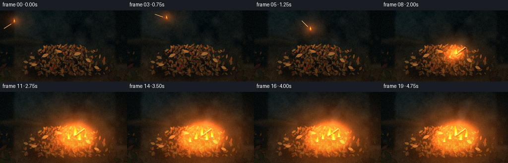
视觉工具实际返回图片 2
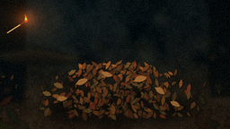
视觉工具实际返回图片 3
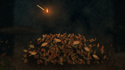
视觉工具实际返回图片 4
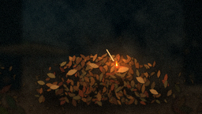
视觉工具实际返回图片 5
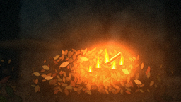
视觉工具实际返回图片 6
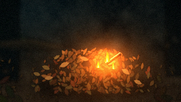
视觉工具实际返回图片 7
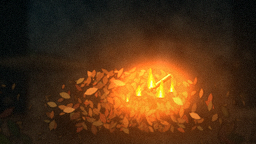
视觉工具实际返回图片 8
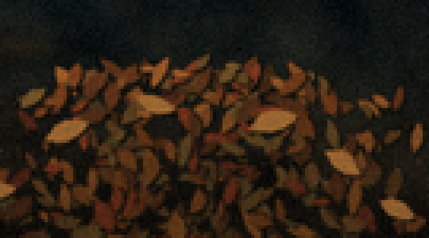
视觉工具实际返回图片 9
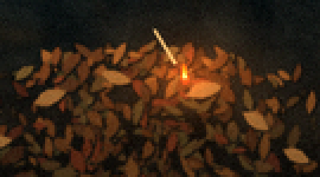
视觉工具实际返回图片 10
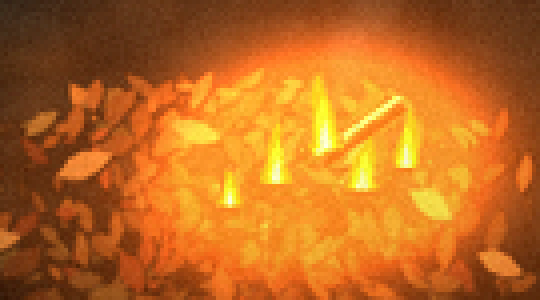
视觉工具实际返回图片 11
视觉工具实际返回图片 12
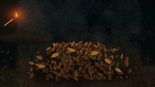
视觉工具实际返回图片 13
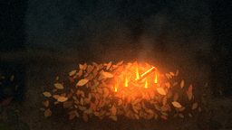
视觉工具实际返回图片 14
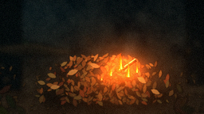
视觉工具实际返回图片 15
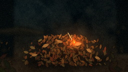
视觉工具实际返回图片 16
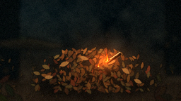
视觉工具实际返回图片 17
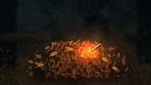
视觉工具实际返回图片 18
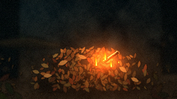
视觉工具实际返回图片 19
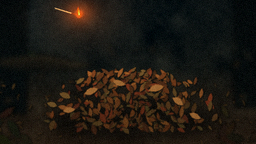
视觉工具实际返回图片 20
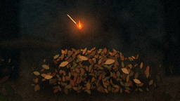
视觉工具实际返回图片 21
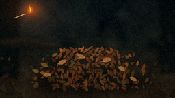
视觉工具实际返回图片 22

视觉工具实际返回图片 23

视觉工具实际返回图片 24
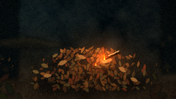
保存候选 3 份；完成命令 20 次；可验证图片返回 24 张。原始 API 响应与完整日志保留在本地。